Dokumentasi Alur Pengolahan Data Dasbor Gizi NTT 2045
Riset PRIS RUPA Future Society 2026, FKM UI dan OR IPSH BRIN. Pengelola data: R. Sutiawan. Versi 0.1, 19 November 2026. Dokumen kerja tim; diperbarui bersama kode.
Dokumen ini menjelaskan logika pengolahan data di balik setiap menu dasbor: dari mana data berasal, langkah olahnya, metode yang dipakai, dan hasil yang tampil. Mockup dasbor saat ini memakai angka ilustrasi; alur di bawah adalah rancangan untuk dasbor riset.
Tanda yang dipakai:
- [KEPUTUSAN TIM]: pilihan teknis yang belum diputuskan dan perlu disepakati tim.
- [VERIFIKASI]: sumber atau definisi perlu dicek ke penyedia data atau kamus variabel.
Daftar isi
- Alur umum
- Menu 1 Ringkasan
- Menu 2 Peta dan lintasan
- Menu 3 Kelompok kabupaten
- Menu 4 Skenario 2045
- Menu 5 Suara warga
- Menu 6 Metadata
- Pemutakhiran tahunan
- Rujukan metode
0. Alur umum
Semua menu dibangun dari satu rangkaian skrip R yang dijalankan dengan paket targets. Satu perintah (targets::tar_make()) menjalankan ulang seluruh tahap, dan hanya tahap yang inputnya berubah yang dihitung ulang.
| Tahap | Isi | Folder atau berkas |
|---|---|---|
| Data mentah | File asli dari penyedia, disimpan apa adanya | data/raw/ (tidak diunggah ke repositori publik) |
| Harmonisasi | Kode wilayah BPS, penyesuaian pemekaran, satuan | R/01_harmonisasi.R |
| Panel | Satu baris per kab/kota per tahun | data/panel/panel_ntt_2013_2024.csv |
| Model | Skrip per metode | R/02_bym2.R, R/03_kml.R, R/04_panel_fe.R, R/05_skenario.R |
| Keluaran | Hanya angka agregat | data/output/ |
| Dasbor | Halaman Quarto | dasbor/index.qmd |
Nama berkas dan folder di atas adalah usulan struktur [KEPUTUSAN TIM].
Menu 1 Ringkasan
Menampilkan nilai provinsi tahun terpilih, perubahan dari tahun sebelumnya, tren singkat, status warna, dan kotak skenario tempat NTT berada.
| Unsur | Logika |
|---|---|
| Nilai provinsi | Rata-rata kab/kota ditimbang jumlah penduduk sasaran (balita untuk stunting dan wasting; remaja putri untuk TTD; rumah tangga untuk indikator Susenas). Untuk indikator survei gizi, dipakai angka provinsi resmi bila tersedia. |
| Arah baik/buruk | Tiap indikator punya arah "buruk bila naik" (misalnya stunting) atau "buruk bila turun" (misalnya protein, posyandu, TTD). Warna teks perubahan mengikuti arah ini. |
| Status warna | Hanya aktif bila batas peringatan sudah ditetapkan di FGD II (Mei 2027). Sebelum itu tampil "batas belum disepakati". |
| Anemia | Hanya data konteks (SKI, sekitar 5 tahunan, tingkat provinsi); tidak dipakai untuk pemantauan tahunan. |
Menu 2 Peta dan lintasan
Menampilkan peta 22 kab/kota untuk indikator terpilih dan lintasan satu kabupaten dari 2013 beserta rentang ketidakpastian. Cara olah berbeda menurut jenis sumber data.
2a. Indikator survei gizi (stunting, wasting)
2b. Indikator Susenas (pangan olahan, protein)
2c. Indikator big data dan Podes
| Unsur | Logika |
|---|---|
| Kelas warna peta, stunting dan wasting | Lima kelas ambang prevalensi WHO-UNICEF (de Onis dkk., 2019). Stunting: kurang dari 2,5; 2,5 sampai kurang dari 10; 10 sampai kurang dari 20; 20 sampai kurang dari 30; 30% atau lebih. Wasting: kurang dari 2,5; 2,5 sampai kurang dari 5; 5 sampai kurang dari 10; 10 sampai kurang dari 15; 15% atau lebih. |
| Kelas warna peta, indikator lain | Kuintil antarkabupaten pada tahun terpilih. Hijau selalu kondisi terbaik; untuk indikator "buruk bila turun", urutan warna dibalik. |
| Penimbang VIIRS | Cahaya malam di sel tanpa penduduk tidak ikut dihitung; tiap sel diberi bobot jumlah penduduk WorldPop agar nilai kab/kota mewakili tempat orang tinggal. |
| Overweight balita | Angka kab/kota kurang teliti (SKI 2023: RSE di atas 25% di sebagian besar kab/kota), sehingga hanya ditampilkan di tingkat provinsi. |
| Harga pangan | Komoditas dan ketersediaan per kab/kota NTT [VERIFIKASI]. |
| Cakupan TTD | Sumber dan definisi laporan rutin Dinkes [VERIFIKASI]. |
Menu 3 Kelompok kabupaten
Mengelompokkan kabupaten yang lintasan stuntingnya mirip, lalu menjelaskan faktor yang membedakan kelompok dan kaitannya dengan skenario.
| Unsur | Logika |
|---|---|
| Input klasterisasi | Lintasan hasil model (bukan angka survei mentah), agar tahun tanpa survei sudah terisi dan galat sampling diredam. |
| Jumlah kelompok | Dipilih dari kriteria statistik dan kemudahan dibaca pengguna; jumlah final [KEPUTUSAN TIM]. |
| Wild cluster bootstrap | Galat baku biasa terlalu optimistis bila klaster hanya 22; bootstrap memberi interval yang lebih jujur. |
| Batas tafsir | Hubungan faktor dengan stunting bersifat asosiasi, bukan sebab-akibat. |
Menu 4 Skenario 2045
Menampilkan matriks empat skenario, posisi NTT (atau satu kabupaten) dari tahun ke tahun, penanda arah, dan rentang proyeksi stunting per skenario.
4a. Penyusunan skenario (sekali, awal 2027)
4b. Posisi tahunan dan proyeksi
| Unsur | Logika |
|---|---|
| Arah penanda | Pangan olahan dan minimarket naik berarti bergeser ke pangan olahan; protein turun juga dibaca bergeser ke pangan olahan. Posyandu dan TTD naik berarti layanan menguat. Bulan kering dibaca sebagai tekanan iklim, tidak masuk dua dimensi. |
| Rumus indeks | Rumus di mockup hanya ilustrasi. Indikator, bobot, dan cara standardisasi ditetapkan tim [KEPUTUSAN TIM]. |
| Proyeksi | Ditampilkan sebagai rentang, bukan satu angka. Skenario bukan ramalan; gunanya menguji kebijakan mana yang tetap berhasil di keempat kemungkinan. |
Menu 5 Suara warga
Menampilkan hasil komponen warga (PK3) dari 6 desa di 3 lokasi gradien urbanisasi: TTS, Kabupaten Kupang, Kota Kupang.
| Unsur | Logika |
|---|---|
| Kesepakatan pengode | Target alfa Krippendorff sekurang-kurangnya 0,80; nilai 0,667 sampai 0,80 hanya untuk kesimpulan sementara (Krippendorff, 2004). |
| Kutipan | Hanya kutipan yang sudah dianonimkan dan disetujui tampil; label informan hanya peran (misalnya ibu balita, kader). |
| Tingkat lokasi | Paling rinci desa. Tidak ada koordinat rumah atau nama informan (UU 27/2022 dan protokol etik). |
| Indikator warga | Dikumpulkan kader per semester atau tahunan; instrumen disusun dari hasil PK3 dan diuji pada Kunjungan II. |
Menu 6 Metadata
Menampilkan definisi, sumber, tingkat, frekuensi, dimensi skenario, dan batas peringatan tiap indikator, serta menyediakan data agregat.
7. Pemutakhiran tahunan
Alur yang dijalankan Bapperida atau tim setiap kali data baru terbit.
| Frekuensi | Sumber |
|---|---|
| Bulanan | CHIRPS, VIIRS |
| Tahunan | SSGI/SKI, Susenas, data rutin TTD, indikator warga tahunan |
| Sekitar 3 tahunan | Podes |
| Sekitar 5 tahunan | Anemia (SKI), hanya konteks |
8. Rujukan metode
- Cameron, A. C., Gelbach, J. B., & Miller, D. L. (2008). Bootstrap-based improvements for inference with clustered errors. The Review of Economics and Statistics, 90(3), 414–427.
- de Onis, M., dkk. (2019). Prevalence thresholds for wasting, overweight and stunting in children under 5 years. Public Health Nutrition, 22(1), 175–179.
- Fay, R. E., & Herriot, R. A. (1979). Estimates of income for small places: An application of James-Stein procedures to census data. Journal of the American Statistical Association, 74(366), 269–277.
- Gale, N. K., Heath, G., Cameron, E., Rashid, S., & Redwood, S. (2013). Using the framework method for the analysis of qualitative data in multi-disciplinary health research. BMC Medical Research Methodology, 13, 117.
- Genolini, C., & Falissard, B. (2010). KmL: k-means for longitudinal data. Computational Statistics, 25(2), 317–328.
- Krippendorff, K. (2004). Content analysis: An introduction to its methodology (2nd ed.). Sage.
- Riebler, A., Sørbye, S. H., Simpson, D., & Rue, H. (2016). An intuitive Bayesian spatial model for disease mapping that accounts for scaling. Statistical Methods in Medical Research, 25(4), 1145–1165.
Rujukan lain (SSP, CIOMS, BPS, WorldPop, CHIRPS, VIIRS) ada di daftar pustaka kerja proyek.